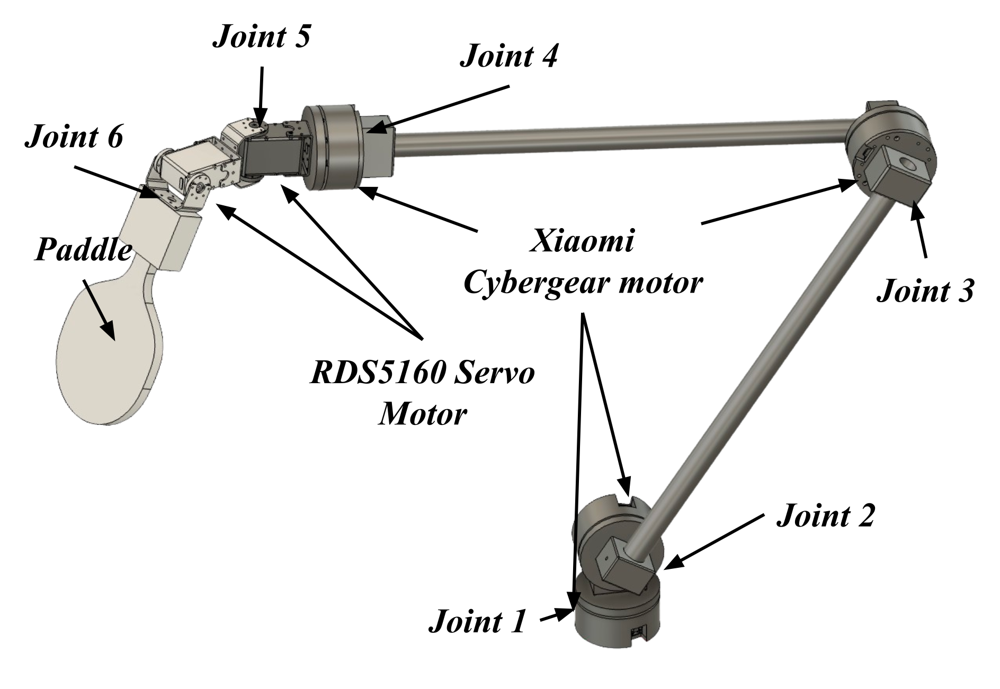
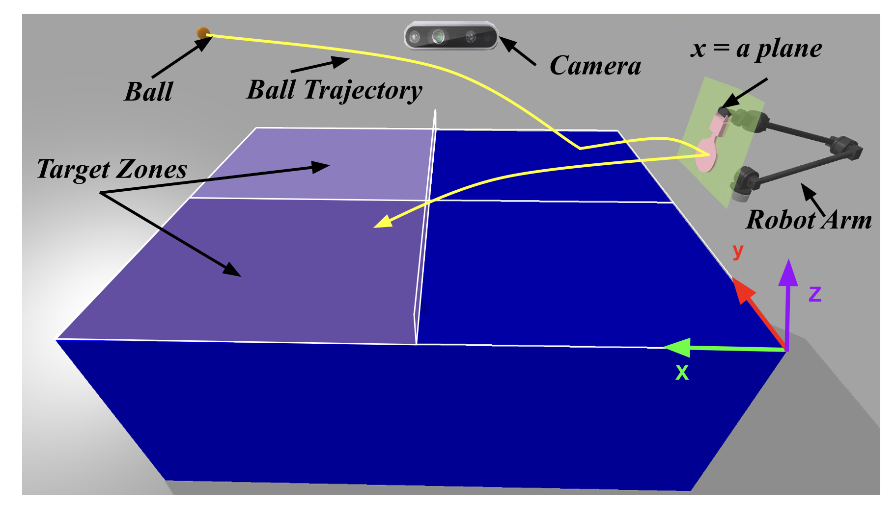
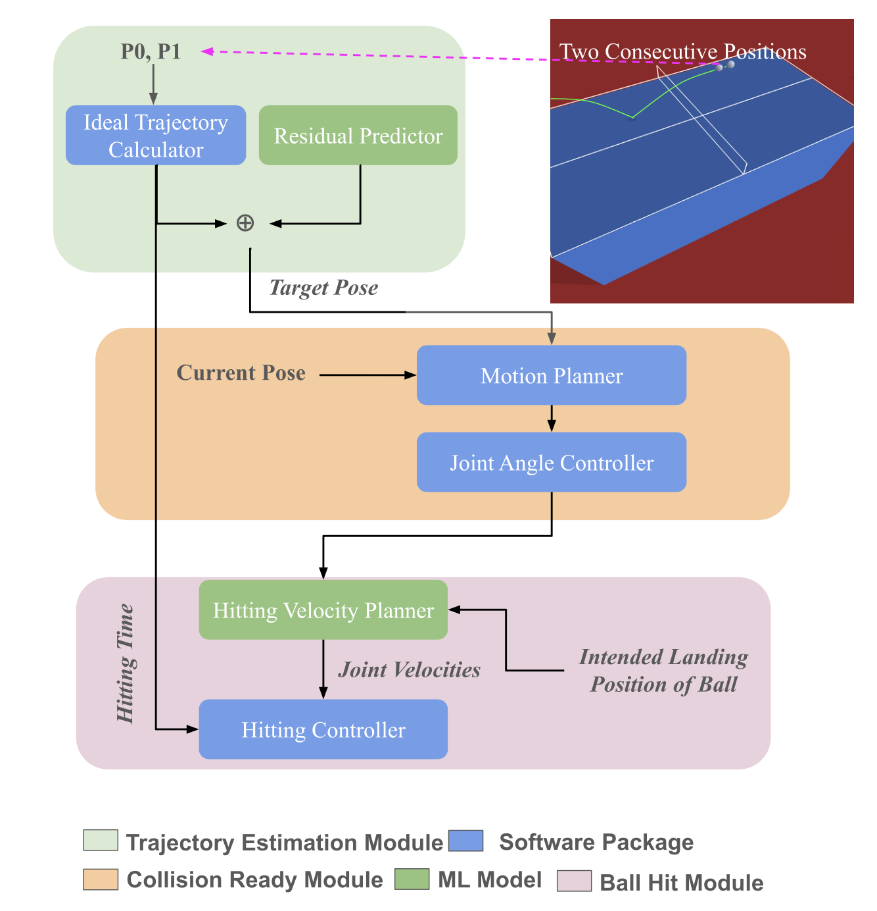
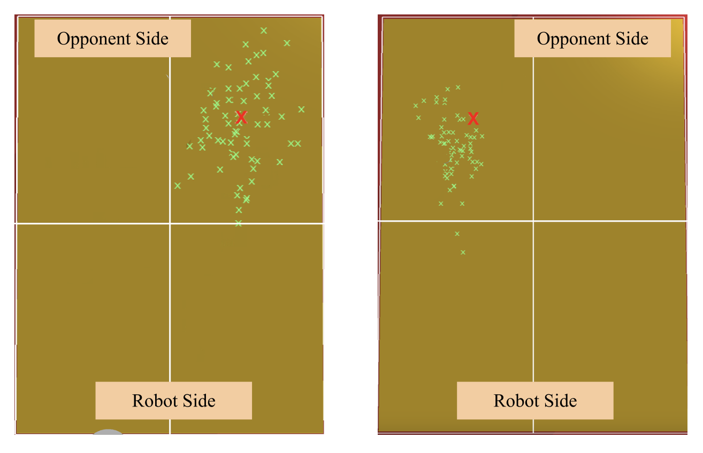

"IVOR" The Tennis Player


[This research is under peer review process. Details will be published soon.]
In this study, we're introducing a new approach to robotic table tennis that zeroes in on accurately predicting where the ball will hit the paddle, using just a tiny bit of data. Unlike other methods that need constant tracking of the ball's position, our technique only needs two quick snapshots of the ball to figure out the collision point. This gives the robot plenty of time to plan its movements and nail the perfect shot. On top of that, we’ve developed a way to estimate the paddle’s hitting speed, ensuring the ball lands exactly where we want it on the table.
Construction
IVOR has got 6 Degrees of Freedom (DOF), which means it can move around with a lot of precision. Joints 1 through 4 are powered by Xiaomi Cybergear motors, letting them rotate over 360 degrees, so the arm has a really wide range of motion. These joints can hit speeds up to 296 rpm and handle up to 12 N.m of torque. For Joints 5 and 6, we’re using RDS5160 servo motors, which can rotate between 0 to 270 degrees, with a peak speed of 461 degrees/sec and a torque of 6.87 N.m. Joint 6 is where the paddle is attached, and with Joints 4, 5, and 6 set up along the roll, pitch, and yaw axes, the robot can control the paddle’s orientation really precisely, which is key for hitting the ball just right and sending it to the perfect spot on the table. As for power, the Xiaomi Cybergear motors run on a 24V DC power supply to keep everything moving smoothly. The RDS5160 servos use a 7.4V DC power supply for accurate control. The whole system is controlled by a Raspberry Pi 4, which handles all the joint motor controls and keeps the robot moving in sync.
Setup
The setup includes the robotic arm, a ball, and a table where the ball bounces before it reaches the paddle. Because the robotic arm has so many degrees of freedom, we've constrained the collision point to a specific plane, x = a. We’ve also marked the target zones on the table, where the ball should land after being hit by the paddle.
System
The proposed system’s architecture breaks down like this: The trajectory estimation module figures out the ball’s path and estimates where it’s going to collide with the paddle. Then, the collision-ready module handles motion planning, making sure the paddle gets to that collision point in time. Finally, the ball hit module calculates the paddle’s hitting speed to ensure the ball lands right in the desired spot on the table.

For the qualitative analysis of the hitting velocity planner, we used a red "X" to mark the intended hitting point. The green marks show where the ball actually landed after being hit by the paddle. As you can see, the balls consistently ended up on the correct side of the court, just like we planned.